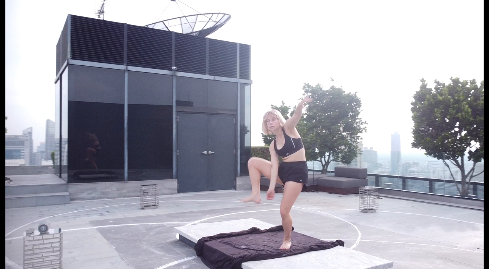
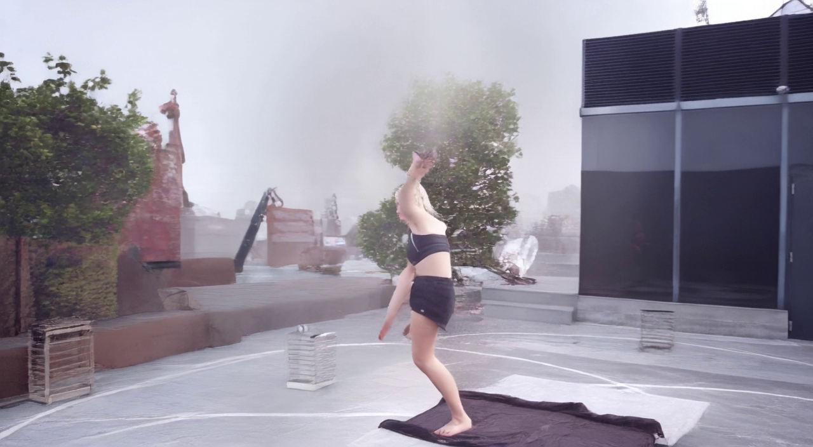

同一段屋顶舞蹈视频、同一原视频 f845。中间图是上一轮 DD Stage2 右转 45° 的原生最后一帧；上一轮 Stage3 的记录确实引用它作为输入首帧。右图是目前已暂停的右转 60° 版本，用于辨认。此页只供确认，尚未换输入或启动新实验。

原生 81 帧，机位右转 45°
机位右转 60°

确认后才会用中间图作为各 Stage3 方案的共同首帧，并将原视频 f845 到结尾的完整剩余段作为动作参考。